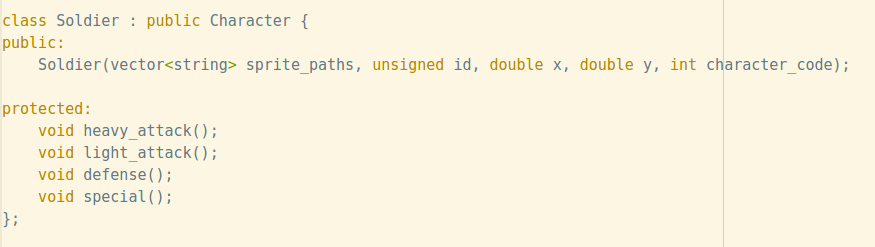
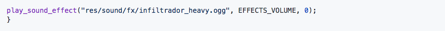
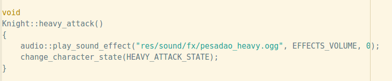
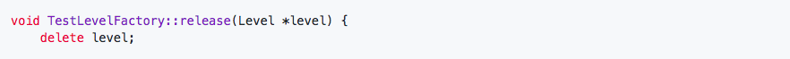
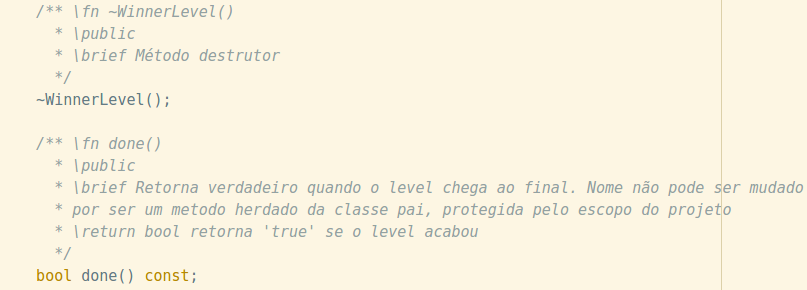
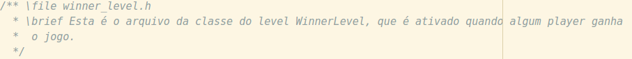
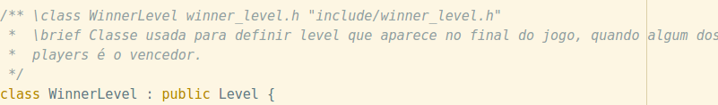
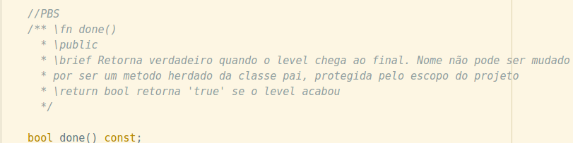
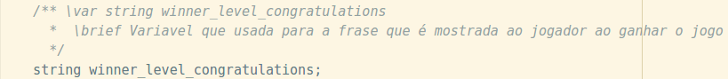
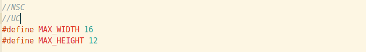

Tecnicas de Programação - Deadly Wish
Folha de Estilo
Introdução
Este documenta explícita as praticas de código utilizadas
na refatoração do projeto Deadly Wish. Elas foram estipuladas
a partir de fontes, experiencia indivdual e requerimentos da equipe.
"As every C++ programmer knows, the language has many powerful features,
but this power brings with it complexity, which in turn can make code more bug-prone and harder to read and maintain."(Google).
Nomes
Considerações Gerais
Todos os nomes de variáveis, métodos, rotas, classes e funções devem ser em inglês. Comentários devem ser em português.
Nomes significativos
Todos os nomes devem ser significativos, de forma que sejam auto explicativos.Exemplo:

Nomes de variáveis
Os nome de variaveis devem ser snake case. Exemplo:

Nomes de constantes
O nome das constantes devem estar em upper with Underscore. Exemplo:

Nomes de metódos
O nome de metódos devem estar em lower Snake Case, sendo que sua nomeclatura de estar associada a um verbo (ação). Exemplo:

Nomes de classes
O nome de metódos devem estar em upper Camel Case, sendo que sua nomeclatura de estar associada a um substantivo (entidade). Exemplo:

Nomes dos arquivos
O nome dos arquivos devem conter o nome de sua respectiva classe com lower Camel Case
Identação
Espaço da indentação
A identação deve ser equivalente a 4 espaços do teclado. Exemplo:

Declaração de classe
Declarar nome de classe e herança na mesma linha, pule uma linha antes de abrir chaves. Exemplo:
Espaço após vírgula e ponto e vígula
Sempre de espaço após virugalas ou ponto e vígula, para maior clareza na leitura do código. Exemplo:
Máximo de caracteres em uma linha
Uma linha deve conter no maximo 100 caracteres.
Espaçamento e fechamento de chaves para métodos e funções
Para a declrações de funções e métodos deve-se declarar tipo do método, pular uma linha, declarar o nome do método, pular mais uma linha e abrir chaves. O fechamaneto das chaves também de ser em nova linha respeitando a identação. Exemplo:
Espaçamento dos parentêses na definição dos método
Deixar sem espaço depois do nome do método. Exemplo:
Quebras de linha após métodos e classes
Após a declaração de um método ou classe é necessario fazer uma quebra de linha.
Comentários
Espaço da indentação
Todos os cometários devem ser relevante para um maior entendimento do código. Comentários com conteúdo que já pode ser inferido devem ser descartados.
Comentarios de até duas linhas
Usar a sintaxe ' // ' para comentários de até duas linhas. Seja consistente com a forma como você comenta e com o estilo que você usa onde.
Estilo do comentário
Usar a sintaxe padrão do Javadoc para comentários de 3 linhas ou mais. Exemplo:
Comentários devem ser identados como código
Os comentários devem seguir o alinhamento do código.
Deve-se comentar o cabeçario de cada arquivo
Os comentários de cebeçario de arquivo devem ser no padrão presvisto pelo doxygen. O nome do arquivo de ve ser seguido da diretiva "\file", na linha seguinte deve vim uma breve descrição da função do arquivo seguido da diretiva "\brief". Exemplo:
Deve-se comentar o cabeçario de cada classe
Os comentários de cebeçario de classe devem ser no padrão presvisto pelo doxygen. O nome do arquivo de ve ser seguido da diretiva "\class", na linha seguinte deve vim uma breve descrição da função do arquivo seguido da diretiva "\brief". Exemplo:
Deve-se comentar o cabeçario de cada função
Os comentários de cebeçario de função devem ser no padrão presvisto pelo doxygen. O nome do função e seus parametros deve ser seguido da diretiva "\fn", na linha seguinte deve vim uma breve descrição da função da diretiva "\brief". Após a descrição deve-se explicitar se a função é publica, privada ou protegida pelas diretivas "\public", "\protected", "\private". Os parametros para a função devem ser descritos após a diretiva "\param" seguido do nome do parametro o tipo dele e uma breve descrição. Deve-se explicitar também o retorno da função pela diretiva "\return" seguindo do tipo de retorno e uma breve descrição do mesmo.Exemplo:
Deve-se comentar as variveis
Os comentários de variáveis devem ser no padrão presvisto pelo doxygen. O comentário das variáveis devem vim uma linha acima da variável com o nome da variável na sequencia da diretiva "\var". Em uma nova linha deve-se explicitar uma breve descrição da função da variavel após a diretiva "\brief".Exemplo:
Deve-se usar marcadores para algumas situações
Para algumas situações deve-se usar marcadores, quando o marcador é referente à alguma função ou variável ele deve vim em uma linha separada acima do outro bloco de comentário. O comentário do marcador deve ser feito com "\\". Os marcadores são:
- PBS (protected by scope) - Trecho de código protegido pelo escopo de projeto
- CD (code duplicaded) - Trecho de código duplicado
- NSC (nonsenese code) - Trecho de código sem sentido
- UC (unnecessary code) - Trecho de código inútil ou desnecessário
Exemplo:
Referências:
Folha de Estilo - NeonEdge, Disponivel em https://github.com/tecnicas-de-programacao-2017-2-grupo-3/neon-edge/wiki/Folha-de-Estilo
Folha de Estilo - SIGS, Disponivel em https://github.com/fga-eps-mds/2017.1-SIGS/wiki/Folha-de-Estilo
Google C++ Style Guide - Google. Disponivel em https://google.github.io/styleguide/cppguide.html
Doxygen. Disponivel em https://www.doxygen.nl/